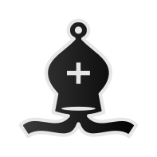
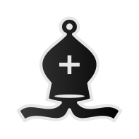
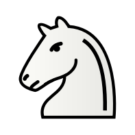
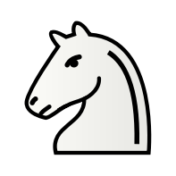

Meeting the Brief
500 Words + Video
As part of your report you are required to include a video showing the artefact in operation. The
video must not be more than 5 minutes in duration and be no more than 1GB in size.
The video should be used to demonstrate how your artefact meets the basic and/or advanced
requirements of the brief. It is suggested that you deal with each requirement you attempted in
the video and demonstrate how you have achieved it.
You may wish to include a brief written description with images demonstrating how your artefact
meets each of the requirements. You will not be penalised marks for not including any text if your
video is sufficient in describing how you meet each of the requirements.
investigation and plan
400 words
In this section of the report you should show evidence of your own research on the thematic brief,
including research on existing solutions, systems or ideas that are aligned to the brief. As a starting
point you may consider using the URLs provided earlier in this document, but please note that this
list is neither exclusive nor exhaustive. All references should be included in the reference section
of your report.
Based on your research you should provide a detailed description of your chosen project. You
should explain clearly the objectives of your project.
I've always wanted to create a chess game, I thought it would serve as an inticing learning experience.
For this project I planned to use the PyGame to create a GUI chess game rather than a CLI based game.
Considering chess relies on patterns that are easier to see on a physical board, it made more sense
to render the game graphically.
Chess is a game that has been studied for centuries. Many developments and iterations have been made
to the game to create the current rendition that is played today. Ancient versions of the game didn't
even have check or checkmate (you did not need to notice your opponent if their king was under attack)
this mean't the king could be taken like any other piece on the board, except taking the king ended the
game
Chess.com has a wide range of
documentation on how chess is meant to be played.
Including how all the pieces move, how the board is set up, checkmate conditions, stalemate conditions
and more. For my version of chess I will foregore checkmate and base my version of the game on ancient
chess. This is because of the complexity of the algorithm. Considering the time allowed and how much
work is need to get the rest of the game functioning, it would be too tedious to implement this function
properly and test it to ensure it has no issues. For that reason, we will allow the king to be taken
like a normal piece in ancient chess, check does not have to be called
Design
400 words
This section of the report should contain a clear description of the design of your project and how
it will meet your objectives.
You should include a detailed flowchart which gives an overview of how your system will work.
You should explain how modelling and abstraction will be applied to your project.

Implementation
500 words
This section should provide a clear description of how the system was implemented. You should
explain the process you went through in creating your artefact.
You should explain one of the problems that you encountered during the implementation and
describe how you overcame the problem.
You should select and explain an algorithm or section of code you designed that was essential in
creating your project.
Testing
350 words
You should describe the extent of testing you carried out, and major problems you encountered
during the testing process. Details of testing should include the type of testing carried out and any
implications to the design as a result of the testing.
You should include a test table to highlight your test cases, expected results, outcomes and test
data that were used.
- test table
- show that it works??/
- ie. that your code logic can handle edge cases (how pawns move)
- pieces can only take their own
- show test table on conversion functions
- how does the user decide on single or multiplayer (add AI toggle? for auto moves?)
Evaluation
350 words
You should evaluate the final product in relation to your initial design and your project objectives
set out in section 2 of the report.
You should suggest, with justification, how your artefact could be improved or iterated upon in the
future.
References
You must reference any information used in your report or in the creation of your artefact, such
as: publications including books, professional journals and government reports; online sources and
other types of media; source code. To include such material without properly referencing the
source will be considered plagiarism. The word count in this section does not count towards your
overall word count.

 



 
